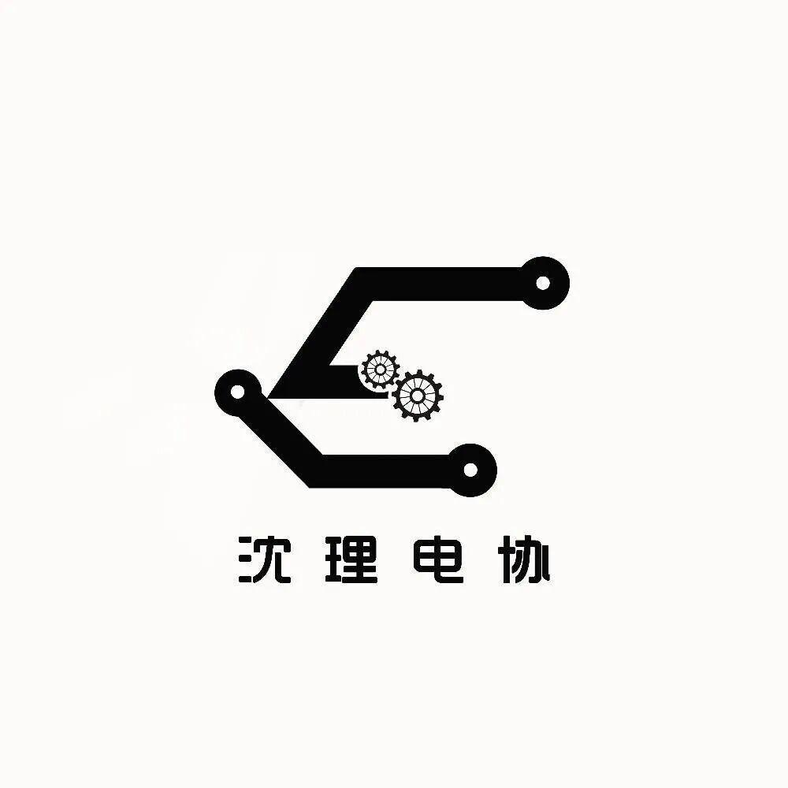

你好，感恩节！
你好，感恩节！
今天已经是十一月的第四个星期四啦！
不是吧！不是吧！
不会还有人不知道今天是感恩节吧
赶紧抓住这次机会
向身边的人说一声感谢吧
不知道你平时在生活中是不是个不善表达的人呢？如果是的话，那你不妨大胆一些，有了你的问候TA们在寒冷的冬天也一定会感到温暖的
嘿，要记得对父母说一些话！
用感恩的心去对待父母， 用真诚的心去与父母交流，不要再认为父母是理所当然的帮我们做任何事情，他们把我们带到这漂亮的世界，已经足够伟大，并且将我们养育成人，不求回报，默默的为我们付出，感恩吧，感谢父母给予的一点一滴。
对于感恩节，相信我的室友小陈应该颇有感触
“虚弱”的小陈开学以来总往医院跑，受到医院里医生和护士小姐姐很多照顾，让我们看看他怎么说吧。
嗯...挺感谢医院里的医生，在我受伤的时候提供给我无微不至的关爱，而且今年这样一个特殊的时期，医生无疑是最危险的职业但他们无私奉献、砥砺前行，给医生大大的赞！！
当然，不要忘了身边的小伙伴啊

有些话，我想对你说
黑暗中前行难免迷失方向，幸好有你伴我同行。感谢你分享我的快乐和痛苦，有过误会和争吵，始终都没有离我而去，今天感恩节，感谢你一直默默支持，我想对你说：感谢有你，在这最美的日子与年华，你一直与我随行~


排版|王海彬
文字|王海彬
关注我们，了解更多资讯！